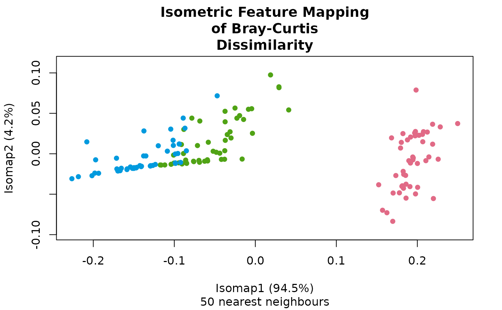

Ordinates samples from their distances, for plotting beta diversity, by
replacing each distance with the length of the shortest path between the
two samples through a graph that links each sample to its nearest
neighbors, then running principal coordinates analysis on those path
lengths. Recovers long ecological gradients that pcoa() bends into an
arch or horseshoe. A parallel C port of scikit-learn's Isomap with
metric = "precomputed".
Usage
isomap(dm, n_axes = 3L, n_neighbors = 5L, radius = NULL, cpus = n_cpus())Arguments
- dm
A
distobject, such as frombeta_div()orbray(), or a symmetric numeric matrix of distances. Must not containNAs or negative values. Distances, and the geodesic distances summed from them, must not exceed \(10^{150}\), since they are squared.- n_axes
The number of axes to compute. Default:
3. Reduced to \(n - 1\) for \(n\) samples.- n_neighbors
How many nearest neighbors to link each sample to. Values larger than \(n - 1\) are reduced to \(n - 1\). Default:
5- radius
Instead of
n_neighbors, link each sample to every other sample within this distance (inclusive). A number of at least 0, orNULL(the default) to usen_neighbors. Give one or the other, not both.- cpus
How many parallel processing threads should be used. The default,
n_cpus(), will use all logical CPU cores.
Value
A numeric matrix with one row per sample and one column per axis,
named "Isomap1", "Isomap2", etc., as described in "Ordination
result" below. Its attributes are:
method:"isomap".eig: The eigenvalue of each axis, on the same scale aspcoa()'s: of Gower's centered matrix of the squared geodesic distances.prop: The proportion of the total variance of the geodesic distances that each axis explains,eig / trace.trace: The total variance: the sum of all eigenvalues, including negative ones.n_neighbors: The number of neighbors used, orNAwithradius.radius: The radius used, orNAwithn_neighbors.components: The number of connected components of the neighbor graph, before they were joined (see below).1if it was connected.membership: Each sample's component, an integer vector named by sample. Components are numbered in order of their first sample.
Details
Method
Neighbor graph. Each sample is linked to its
n_neighborsnearest other samples (or to every sample withinradius), by an edge as long as the distance between them. The graph is undirected: a link from either end counts. Ties are broken by sample order, so that tied distances and duplicate samples (distance 0) give a well-defined graph.Joining components. If the graph falls apart into several connected components, as it often does for clustered data, every pair of components is joined by one edge between their two closest samples, with a warning. The joined graph's geodesics between clusters then run through those closest pairs. Raise
n_neighborsto avoid this. If there are so many components that joining them would add more than 10 times as many edges as the neighbor graph has (and more than 65,536),isomap()stops with an error instead (see "Speed and memory").Geodesic distances. The length of the shortest path through the graph between every pair of samples, by Dijkstra's algorithm, one search per sample (scikit-learn lets SciPy choose between Dijkstra and Floyd-Warshall; both give the same lengths, up to rounding).
Embedding. Classical scaling of the geodesic distances, exactly as in
pcoa(): the topn_axeseigenvectors of \(B = -\frac{1}{2}JG^{(2)}J\), where \(G^{(2)}\) holds the squared geodesic distances and \(J\) is the centering matrix, scaled by the square roots of their eigenvalues. Axes whose eigenvalues aren't positive are dropped with a warning, as inpcoa().
With n_neighbors = \(n - 1\), every pair of samples is linked, and
when dm obeys the triangle inequality (e.g. Euclidean distances), the
geodesic distances are dm itself, so isomap() gives the same result
as pcoa(). Small n_neighbors follow the data's shape more closely but
are more easily split into components and thrown off by noise.
Speed and memory
Neighbors are found straight from dm, in parallel. The geodesic
distances are held as one more packed lower triangle the size of dm
(8 bytes per pair of samples: 10 GB for 50,000 samples), which is the
only large allocation; an \(n \times n\) matrix is never made. They
are kept in double precision, as dm is, since the eigenvectors need
it. Each search computes only the distances from its sample to later
samples, so each pair is computed once; searches run in parallel, cpus
at a time. The eigenvectors come from block Lanczos iteration, as in
pcoa(), which needs a few dozen vectors of length \(n\). Besides
that, the graph takes about 44 * n * n_neighbors bytes (or 32 bytes
per linked pair of samples with radius), and each thread 28 bytes per
sample.
With \(E\) edges (about n * n_neighbors to twice that), the time is
about \(n^2\) to find neighbors, plus \(n (n + E) \log n\) for the
searches, plus a few dozen passes over the geodesic distances for the
eigenvectors, all divided among cpus.
Joining \(c > 1\) components takes one more pass over dm, adds
\(c (c - 1) / 2\) edges (32 bytes each), and needs a table of 16 bytes
per pair of components for each thread that scans for the closest pairs
(one thread at least; more only while all their tables fit in 16 MB).
Every search may relax every joining edge, so a small radius or
n_neighbors that leaves many samples on their own would make memory
grow with \(c^2\) and time with \(n c^2\). To keep both within a
small multiple of what a connected graph needs, isomap() refuses (with
an error saying how many components it found) when the joining edges
would number more than 10 times the neighbor graph's own edges, and more
than 65,536. That floor (about 3 MB) lets small datasets join freely: up
to 362 samples can all be on their own.
Differences from scikit-learn
isomap() gives the same geodesic distances (dist_matrix_), up to
rounding, and the same embedding (embedding_) and eigenvalues as
sklearn.manifold.Isomap(metric = "precomputed"), except:
Ties. scikit-learn chooses among neighbors tied in distance by
numpy.argpartition(), in an order that isn't specified, and so can link different ones among duplicate samples too.isomap()always prefers the earlier sample. When no tie straddles then_neighbors-th neighbor, the two graphs are the same.Axes with eigenvalues that aren't positive. scikit-learn stops with an error when one of the top
n_axeseigenvalues is substantially negative, and otherwise returns axes of zeros for them.isomap()drops them with a warning, aspcoa()does.Rounding. Each geodesic distance is summed along its path from the earlier of its two samples. SciPy may sum the same path from the other end, or with Floyd-Warshall's grouping, which can differ in the last bit or two. The eigenvectors come from block Lanczos rather than LAPACK or ARPACK. In the package's tests, geodesic distances agree to within \(4 \times 10^{-16}\) (relative), and coordinates to within \(10^{-12}\) of the largest one.
n_neighborslarger than \(n - 1\). scikit-learn stops with an error;isomap()uses \(n - 1\), with a warning.Very many components. scikit-learn joins any number of them;
isomap()refuses past the limit above.Sign. scikit-learn flips each axis so that its largest coordinate in absolute value is positive.
isomap()does aspcoa()does: it makes positive the first coordinate whose absolute value is within a relative \(10^{-8}\) of the largest, so that rounding can't break a tie differently on different computers. The two only differ when an axis's largest absolute values are tied, or nearly so, with opposite signs.Input and output. Only
distobjects or symmetric matrices of distances; not data matrices or sparse graphs. The diagonal of a matrix is ignored.transform()of new samples andreconstruction_error()are not offered. The components of the neighbor graph are returned as attributes.
Coming from vegan::isomap()
vegan::isomap()'skis the number of neighbors; the number of axes (vegan'sndim) isisomap()'sn_axes. Give the number of neighbors asn_neighbors.vegan'sepsiloncorresponds toradius.When the neighbor graph falls apart into several components,
veganstops with an error (or, withfragmentedOK = TRUE, ordinates only the largest component).isomap()joins the components at their closest samples, with a warning, and returns every sample.
Reproducibility
Given the same dm and arguments, results, including all attributes,
are bit-for-bit identical from run to run, in fresh R sessions, and for
any number of cpus. Each sample's neighbors, each joining edge, and
each search are computed by one thread in a fixed order of operations,
with comparisons that break ties by sample order, so tied distances,
equally short paths and duplicate samples can't make results depend on
which thread finishes first. The eigenvectors are as reproducible as
pcoa()'s. No random numbers are drawn from R, so set.seed() has no
effect and R's random number stream is left untouched. Results can
differ in the last bits between computers or compilers.
n_axes larger than \(n - 1\) (the most axes possible) is reduced to
\(n - 1\).
Ordination result
Every ordination function (pcoa(), pca(), rpca(), dbrda(), capda(),
capscale(), mds(), nmds(), isomap(), tsne(), umap(), and so
dist_ord()) returns the same kind of
object: a numeric matrix with one row per sample and one column per
axis, so that it can go straight into a data frame. Rows are
named after the samples, when the input has names. Columns are named
after the method: "PCoA1", "PC1", "RPCA1", "dbRDA1" or "CAP1"
(then "MDS1" for unconstrained axes), "MDS1", "NMDS1",
"Isomap1", "TSNE1", "UMAP1", and so on.
Its attributes always begin with these three, in this order, each with one value per column:
method: The method's ID, e.g."pcoa"or"nmds".eig: Each axis's eigenvalue, on the method's own scale:pcoa()andisomap()give the eigenvalues of Gower's centered matrix (sums of squares);pca()andrpca()give variances, which arepcoa()'s divided by \(n - 1\) for \(n\) samples; anddbrda()andcapscale()followvegan, which also divides by \(n - 1\) when any distance is 4 or more.NAformds(),nmds(),tsne(), andumap(), which have no eigenvalues.prop: The proportion of the total variance (or inertia) that each axis explains. Unlikeeig, it is comparable between methods, so use it to label axes.NAwhere it isn't defined.
Attributes particular to the method follow them, and last, the records
of how it was made (see ecodive_steps): dist, the distance
matrix's, for the methods that take distances, and ord, the
ordination's own (its method, display name and settings). The matrix has class
"ecodive_ord" (as well as "matrix"), so that print() lists the
other attributes by name rather than in full, and plot() draws the
samples on the first two axes, labelled from the attributes, with any
loadings, constraints and centroids on top (see plot.ecodive_ord()).
plot(ord, "Species", iris) colours the samples by a column of
metadata. Subsetting with [, or as.data.frame(), gives a plain
matrix or data frame without the attributes.
References
Tenenbaum, J. B., de Silva, V., & Langford, J. C. (2000). A global geometric framework for nonlinear dimensionality reduction. Science, 290(5500), 2319-2323. doi:10.1126/science.290.5500.2319
Dijkstra, E. W. (1959). A note on two problems in connexion with graphs. Numerische Mathematik, 1, 269-271. doi:10.1007/BF01386390
Pedregosa, F., et al. (2011). Scikit-learn: Machine learning in Python. Journal of Machine Learning Research, 12, 2825-2830. https://jmlr.org/papers/v12/pedregosa11a.html
Gower, J. C. (1966). Some distance properties of latent root and vector methods used in multivariate analysis. Biometrika, 53(3-4), 325-338. doi:10.1093/biomet/53.3-4.325
Examples
dm <- bray(iris[, 1:4])
# Enough neighbours to link setosa to the other two species.
ord <- isomap(dm, n_neighbors = 50)
plot(ord, 'Species', iris)

head(ord)
#> Isomap1 Isomap2 Isomap3
#> [1,] 0.1815951 -0.039742273 -0.027484748
#> [2,] 0.1976638 0.024659828 -0.004686106
#> [3,] 0.2105455 -0.008544025 -0.035748665
#> [4,] 0.2123135 0.026838706 -0.005276499
#> [5,] 0.1909184 -0.040604972 -0.023909921
#> [6,] 0.1734805 -0.026899418 0.055991780
str(ord)
#> 'ecodive_ord' num [1:150, 1:3] 0.182 0.198 0.211 0.212 0.191 ...
#> - attr(*, "dimnames")=List of 2
#> ..$ : NULL
#> ..$ : chr [1:3] "Isomap1" "Isomap2" "Isomap3"
#> - attr(*, "method")= chr "isomap"
#> - attr(*, "eig")= num [1:3] 3.1556 0.1415 0.0627
#> - attr(*, "prop")= num [1:3] 0.9455 0.0424 0.0188
#> - attr(*, "trace")= num 3.34
#> - attr(*, "n_neighbors")= int 50
#> - attr(*, "radius")= num NA
#> - attr(*, "components")= int 1
#> - attr(*, "membership")= int [1:150] 1 1 1 1 1 1 1 1 1 1 ...
#> - attr(*, "dist")= Bray-Curtis Dissimilarity (metric = bray, norm = none, pseudocount = 0)
#> - attr(*, "ord")= Isometric Feature Mapping (method = isomap, n_axes = 3, n_neighbors = 50, radius = NA)